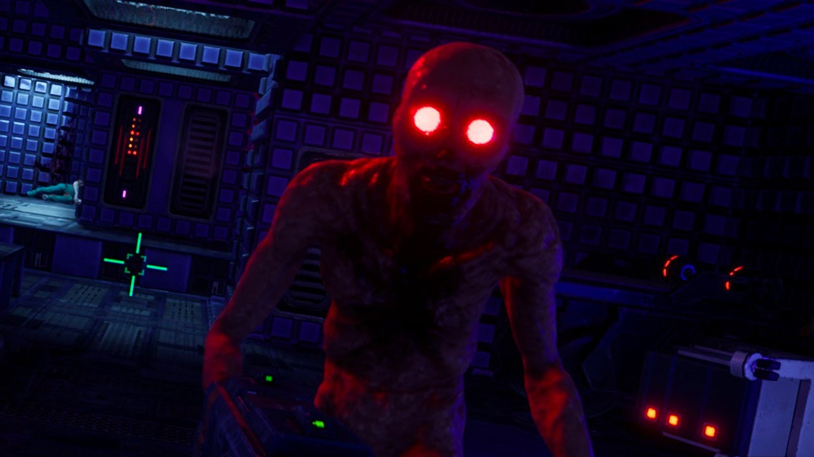

Game
Origin: Cereza and the Lost Demon
March 17
Quê em là một ngôi làng nhỏ nằm dưới chân núi. Đứng ở lưng núi là có
thể quan sát toàn bộ ngôi làng. Nhìn khắp làng, đâu cũng là màu xanh
tươi tràn ngập sức sống. Đó là màu xanh của ruộng lúa đương thì ngon
gái thơm nồng hương sữa lúa non. Là màu xanh của những khu vườn tươi
tốt được chăm sóc chu đáo. Là màu xanh của những ao bèo, hồ sen.
Thật là thích mắt! Nhờ thảm xanh ấy và cả ngọn núi lớn mà cả làng
lúc nào cũng mát mẻ. Cuộc sống nơi đây thì bình yên, chậm rãi. Em
luôn cảm thấy quê mình như là một chốn thế ngoại đào viên cho mọi
người dừng chân nghỉ ngơi khi đã mệt nhọc với chốn xô bồ ngoài kia.